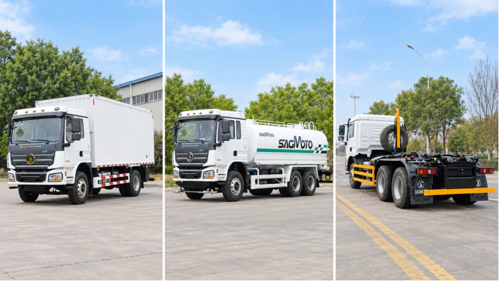
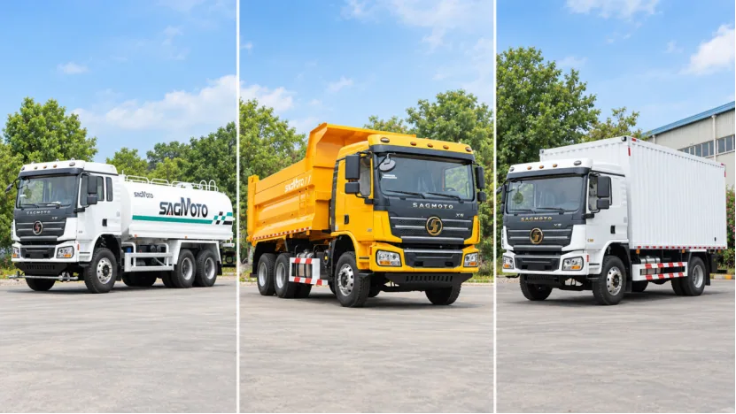
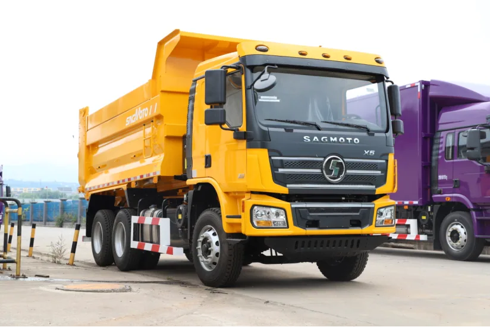
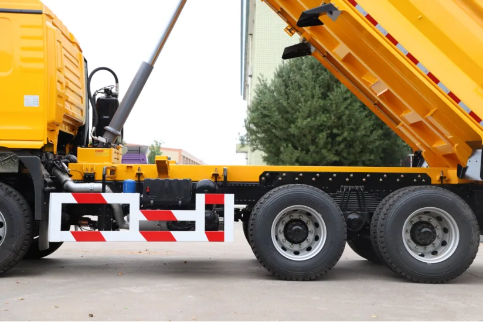
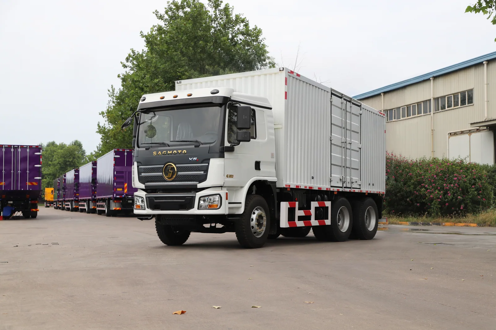
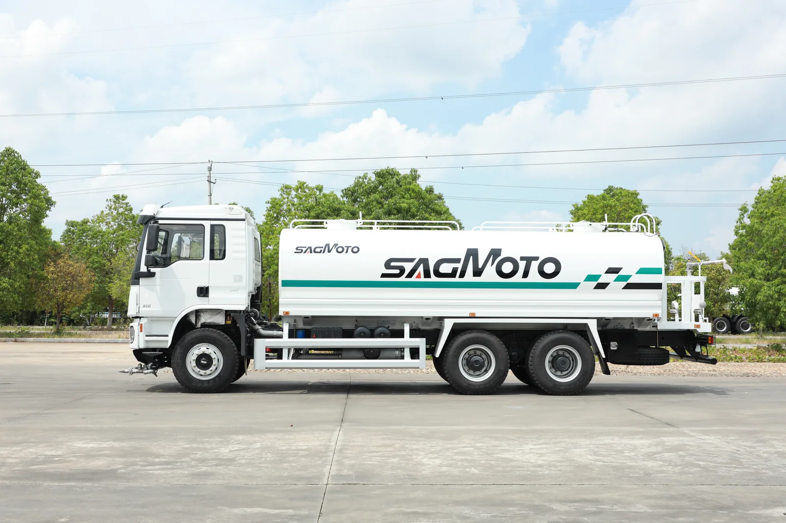
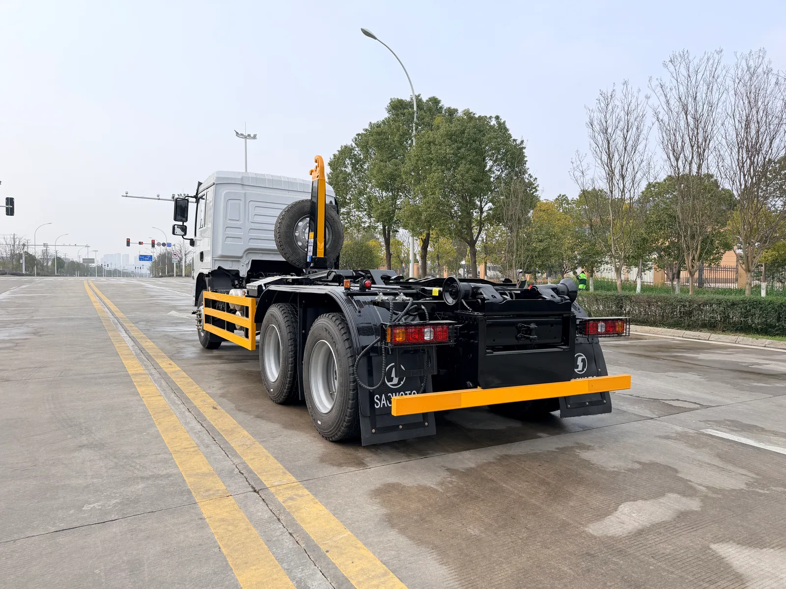
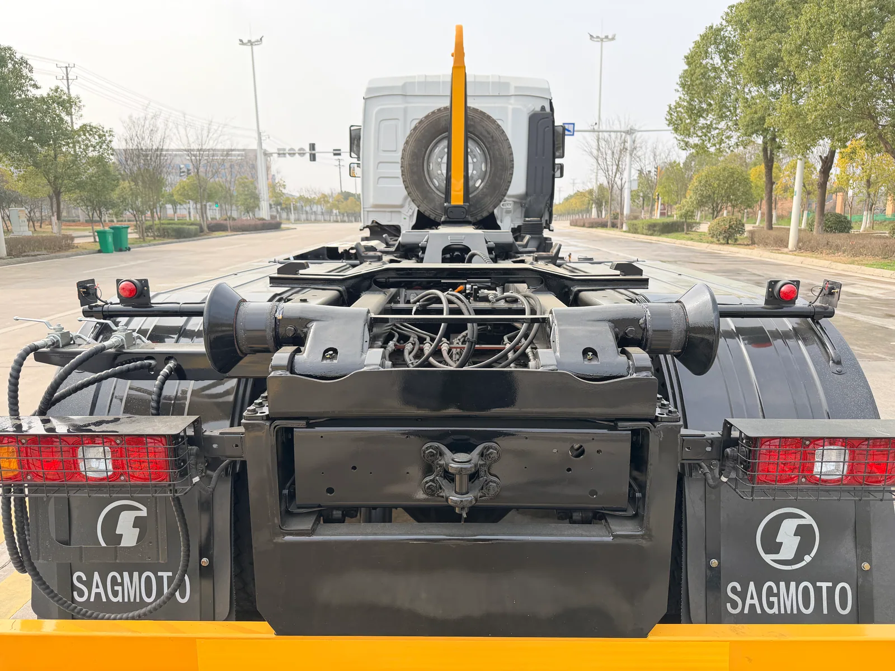

There is no single truck configuration that suits every export market. High heat and sand, low temperatures, difficult roads, fuel quality, workshop capability and vehicle regulations all change what a buyer should specify. The SAGMOTO X5 was developed as a broader platform so the chassis, powertrain and body can be matched to the job instead of forcing every buyer into one fixed truck.
中文版本：本文下半部分提供完整中文内容。The complete Chinese version follows the English guide.
Why develop the X5 platform?
The X5 platform expands the product range beyond earlier cab and chassis arrangements. According to the supplied product material, the development work reorganized the cab, powertrain choices, chassis layout and application coverage to give export projects more room for configuration control and future improvement.
The cab structure is described as designed and validated around ECE R29 impact requirements, including frontal impact, A-pillar impact and roof-strength items. This statement must not be confused with complete-vehicle approval in every destination. Emissions, lamps, glass, mirrors, seat belts, vehicle weights and market-entry documentation still need to be checked for the buyer's country.
The first development focus covers Gulf and Central Asian markets, while configurations can also be evaluated for African and other overseas operating conditions.
X5 is a platform, not one fixed truck
The planned X5 range covers dump trucks, general cargo and box trucks, water sprinkler and water tanker trucks, fuel tankers, concrete mixers, sanitation vehicles, hook-lift refuse trucks, truck-mounted crane vehicles and other special-purpose bodies. The platform mainly covers 4x2 and 6x4 layouts, with a 4x4 version also planned.

How X5 and X5s are distinguished
Under the current naming plan, X5s generally represents a vehicle equipped with a Cummins engine. The wider X5 platform includes planned Cummins and Yuchai choices. Cummins ISD6.7 options are listed for Euro III and Euro V solutions, while Yuchai planning includes YC6L and YCS06 series for selected Euro II and Euro V applications.
The supplied platform material lists a main power range of 245-340 PS, with a 230 PS option planned for selected vehicles. Reference planning includes Cummins outputs of 245, 270, 285 and 300 PS; Yuchai YCS06 output coverage of 230-300 PS; and YC6L Euro II options of 310 and 340 PS. These are platform possibilities, not a promise that every output is available in every chassis or country. The final engine, power and emission level must be confirmed before quotation.
Powertrain and axle matching must follow the duty
A city cargo truck, a construction dump truck and a tanker-body special vehicle may share a cab family while requiring very different gearing, wheelbase, axles, frame and power take-off arrangements. The X5 plan includes FAST 8-, 9- and 10-speed manual transmissions and a planned AMT solution. Applicable transmissions can be matched with power take-offs for tipping, pumps, hook-lift hydraulics and other body equipment.
HANDE axles are the main planned axle family. Depending on gross weight and duty, 4x2 and 6x4 vehicles may use a 5.5-tonne-class front axle with 11.5- or 13-tonne-class drive axles. The planned 4x4 arrangement includes a 9-tonne-class driven front axle and a 16-tonne-class double-reduction rear axle. Final ratings and ratios must appear in the signed technical specification.
- cargo or liquid density and the weight of the body equipment;
- road surface, maximum grade, daily distance and expected speed;
- legal gross weight, axle loads and registration limits;
- city, highway, construction or off-road duty;
- local parts supply, fuel quality and maintenance capability.
X5 dump truck: body, hoist and route must work together
The platform plan includes 4x2, 4x4 and 6x4 dump trucks. A 6x4 vehicle can be discussed with Cummins or Yuchai power according to emission and market requirements, together with a reinforced frame, multi-leaf suspension and tandem HANDE drive axles.
Before selecting a dump truck, identify whether it will carry aggregate, ore or general construction material; whether the route includes repeated climbs; the required body length and working volume; floor and side-wall material; hoist type; tire specification; axle ratio; and the legal gross weight and axle limits. A city construction truck, highway tipper and mining-site truck should not receive the same configuration simply because all three use a 6x4 layout.


X5 cargo truck: wheelbase and body length are one decision
X5 cargo chassis can support side-wall bodies, closed box bodies and other cargo equipment. Multiple 4x2 and 6x4 wheelbases can be considered according to cargo type, body length, road conditions and completed-vehicle mass.
A closed box protects suitable cargo from rain, dust and open exposure; a side-wall body can make side or top loading easier. A longer body is not automatically better. Increasing wheelbase and body length affects turning radius, road access, axle-load distribution and vehicle mass, so the proposal should balance cargo volume with route practicality.

Special vehicles: reserve space and interfaces for the body
The value of a special-vehicle chassis lies in how well it accepts the upper body. Wheelbase, rear overhang, frame layout, power take-off, fuel tank, air tanks and chassis accessories may need repositioning for water tankers, fuel tankers, sanitation trucks, cranes and other equipment.
X5 water tanker and sprinkler truck
A water truck requires joint confirmation of tank volume, water density, pump, spray system, chassis payload and axle loads. The physical space available for a tank is not the same as the volume that can be transported legally and safely. Buyers should specify the water source, refill distance, spray tasks, pump requirement and road restrictions before the body drawing is approved.

X5s hook-lift refuse truck
The pictured X5s 6x4 hook-lift chassis uses a layout prepared for hydraulic body equipment. A hook-lift system can load, unload and transport compatible removable containers, allowing one chassis to work with multiple containers in refuse-transfer or material-handling projects. Container dimensions, hook height, hydraulic capacity, controls, stabilizing requirements and local safety provisions must be confirmed with the body supplier.


X5 Pro: a planned comfort and equipment upgrade
X5 Pro is planned on the same basic cab structure with further exterior, interior and comfort upgrades for selected markets. Depending on the product plan and order, discussed features may include a high-roof cab, front and rear air cab suspension, air-suspension driver's seat, automatic climate control, multifunction steering wheel, color instrument display, larger multimedia screen, 360-degree camera and reversing view, LED lighting and electric cab tilting.
These items are not presented as standard equipment on every X5 Pro. Availability must be confirmed against the current production plan and the final order specification.
Cab comfort and structural information
The X5 cab is planned with different floor arrangements according to engine packaging. Vehicles using Cummins ISD and Yuchai YCS06 can use a low-engine-tunnel arrangement and may support a third seat, while the larger YC6L package uses a raised floor.
The supplied product material lists a 2,020 mm sleeper length, an optional maximum width of 665 mm and approximately 106 L of storage below the sleeper. Storage boxes, cup holders, map pockets and passenger-side storage support longer working days. Depending on configuration, the driver's seat can be hydraulic or air suspended, and the steering column supports height and angle adjustment.
The same material states that the main 4x2 and 6x4 chassis use an 850 x 270 / 8+4 double-layer frame and multi-leaf suspension, and reports 120,000 fatigue-test cycles for the X5 leaf spring compared with the cited 80,000-cycle national-standard reference. These figures should be checked against the technical document applicable to the ordered vehicle.
Configure for climate, regulations and service conditions
Dusty markets may require a desert air cleaner, protective components and a cab air gun. Cold-region projects may discuss cab insulation, low-temperature batteries, water heating and dump-body floor heating. High-temperature markets should focus on cooling capacity, air conditioning and long-duration operation.
Steering position, language labels, emission level, lamps, glass, mirrors, seat belts, tire approvals and other compliance items vary by destination. Customization should not mean adding options without a plan; it should balance regulations, duty, acquisition priorities and future maintenance.
What to send for an X5 configuration proposal
- destination country, port, steering position and required emission level;
- vehicle application and the cargo, liquid or material to be handled;
- target legal gross weight, payload and local axle-load limits;
- road surface, maximum grade, climate, daily distance and expected speed;
- body type, dimensions, capacity and required hydraulic or pump equipment;
- quantity, inspection requirements, spare-parts planning and local service conditions.
Frequently asked questions
Is SAGMOTO X5 a single truck model?
No. It is a platform for several chassis layouts and applications. Final configuration follows the vehicle's actual task.
What is the difference between X5 and X5s?
Under the current naming plan, X5s generally identifies Cummins-powered versions. Exact engine, output and emission level still require written confirmation.
Does the ECE R29 statement mean full vehicle approval?
No. It relates to the cab design and validation described in the product material. Complete-vehicle registration and market access must be checked separately for the destination.
Can X5 support special-purpose bodies?
Yes, the platform plan includes water tanker, fuel tanker, mixer, sanitation, hook-lift and crane applications, subject to chassis-body engineering and legal load confirmation.
What information is needed before quotation?
Provide the destination, application, cargo or medium, legal weight, route, grade, climate, body requirements, emissions, steering and quantity.
从产品升级到平台拓展：全面了解 SAGMOTO X5 系列
海外卡车市场不存在一套适合所有国家的统一配置。海湾地区需要考虑高温、风沙和长时间作业；中亚部分市场需要面对低温、复杂道路和较大的昼夜温差；非洲不同国家的道路条件、燃油质量、维修能力和车辆法规也存在明显差异。
对于出口车型来说，产品竞争力不只来自发动机马力和价格，还取决于产品平台能否针对不同市场灵活匹配。基于这样的产品思路，SAGMOTO 推出 X5 平台，覆盖自卸车、载货车及多种专用车辆，为不同海外市场提供更加完整的产品选择。
为什么开发 X5 平台？
X5 是在现有产品基础上升级和拓展的新一代平台。原有部分车型采用外购驾驶室，在质量控制、配置优化和后续改进方面存在一定限制，部分零部件也难以满足海外市场不断提高的法规要求。X5 对驾驶室、动力系统、底盘布置及产品覆盖范围进行了重新规划。
资料显示，驾驶室结构按照 ECE R29 碰撞法规要求进行设计和验证，涉及前部碰撞、A 柱冲击及顶部承压等安全项目。但这不等于整车已经取得所有国家的市场准入认证。车辆能否进入具体市场，还需要根据当地法规确认排放、灯具、玻璃、后视镜、安全带及整车认证要求。
X5 不是单一车型，而是一套产品平台
根据现有规划，X5 可拓展自卸车、普通载货车、厢式及栏板载货车、洒水车和水罐车、油罐车、搅拌车、环卫车辆、勾臂垃圾车、随车起重运输车及其他专用车辆。
平台主要覆盖 4x2 和 6x4 驱动形式，同时规划 4x4 全驱车型。根据车辆用途、道路条件和上装需求，还可以匹配不同轴距、车架后悬及动力系统，整车总质量规划主要覆盖 18-30 吨级。客户可以先确定运输任务，再在平台内匹配适合的底盘和上装。
X5 与 X5s 应该怎样区分？
按照当前产品命名规划，X5s 一般代表搭载康明斯发动机的车型。X5 平台规划康明斯和玉柴两类动力：康明斯主要采用 ISD6.7 系列，覆盖欧 III 和欧 V 排放方案；玉柴动力包括 YC6L 和 YCS06 系列，覆盖部分欧 II 和欧 V 方案。
平台主要马力覆盖 245-340 PS，并针对部分车型规划 230 PS 动力。资料中的康明斯功率包括 245、270、285 和 300 PS；玉柴 YCS06 规划覆盖 230-300 PS，YC6L 欧 II 方案包括 310 和 340 PS。具体发动机、马力和排放标准必须根据目标国家、车辆用途及最终确认的配置确定，不能仅凭车辆外观判断。
不同用途，需要不同的动力与底盘匹配
卡车选型不能只比较发动机马力。城市配送载货车、工程自卸车和安装罐体的专用车辆，即使采用相同驾驶室，对动力系统、轴距、车桥和车架的要求也可能完全不同。
X5 平台规划多种法士特变速箱，包括 8 挡、9 挡和 10 挡手动变速箱，同时规划 AMT 方案。适用型号可以匹配取力器，为自卸车举升、洒水泵、勾臂机构及其他专用设备提供动力输出条件。
车桥方面主要规划汉德车桥。4x2 及 6x4 车型可根据总质量和工况匹配 5.5 吨级前轴，以及 11.5 吨或 13 吨级驱动桥；4x4 全驱车型规划 9 吨级驱动前桥和 16 吨级双级减速后桥。最终承载等级与速比应写入正式技术配置。
X5 自卸车：面向工程运输工况
X5 平台规划 4x2、4x4 和 6x4 自卸车。采购时除发动机马力外，还需要确认运输砂石、矿石还是普通建筑材料，是否频繁爬坡，货箱长度与容积，底板和侧板材料，液压举升形式，轮胎规格、车桥速比，以及当地允许的整车总质量和轴荷。同样是 6x4 自卸车，城市施工、公路运输和矿区作业需要的配置并不相同。
X5 载货车：轴距和货箱需要同时考虑
X5 可匹配栏板货箱、厢式货箱及其他载货上装。封闭式货箱适合需要防雨、防尘和封闭运输的货物，栏板载货车便于从侧面或顶部装卸。载货车并不是货箱越长越好，轴距增加会影响转弯半径、道路通过性、轴荷分配和整车重量。
X5 专用车：为上装预留匹配空间
专用车辆的关键在于底盘与上装之间的匹配。X5 可根据洒水车、油罐车、垃圾车、随车吊和其他专用车辆的需求，对轴距、车架后悬、取力器、油箱、储气筒和底盘附件布置进行调整。
X5s 6x4 勾臂垃圾车可以通过液压系统完成垃圾箱体的装载、卸载和运输，一辆底盘可配合多个兼容的移动箱体使用。X5 6x4 洒水车则需要根据罐体容积、水泵、喷洒系统和整车轴荷进行设计。罐体的物理空间与车辆能够合法、安全运输的重量并不是同一个概念。
X5 Pro：内外饰进一步升级
X5 Pro 是针对特定市场规划的升级版本，与 X5 采用相同的驾驶室基础结构，但进一步讨论高顶驾驶室、前后气囊悬置、气囊减震主座椅、自动恒温空调、多功能方向盘、彩色液晶仪表、大尺寸多媒体显示屏、360 度环视及倒车影像、LED 灯具和电动驾驶室翻转等配置。上述配置并非所有 X5 Pro 的固定标准配置，必须结合实际产品计划和订单确认。
舒适性与结构信息
X5 驾驶室根据发动机布置分为不同地板结构。匹配康明斯 ISD 和玉柴 YCS06 的车型可采用微凸地板方案，并可讨论第三座椅；YC6L 发动机本体较大，相应车型采用凸地板结构。
产品资料列出的卧铺长度为 2020 mm，最宽可选 665 mm，卧铺下方储物空间约为 106 L。主驾驶座椅可根据配置选择液压座椅或气囊减震座椅，方向盘转向管柱支持上下及角度调节。
资料还显示，4x2 和 6x4 车型主要采用 850x270 / 8+4 双层车架和前后多片簧悬架；X5 板簧疲劳寿命测试达到 12 万次，高于资料引用的 8 万次国标要求。具体订单仍应核对适用的技术文件。
针对不同市场进行配置定制
多风沙地区可考虑沙漠空滤、防护件和驾驶室吹气枪；寒冷地区可讨论保温驾驶室、低温蓄电池、水暖加热器及自卸货箱底板加热；高温地区需要重点确认冷却系统、空调和长时间作业条件。
车辆还需要根据目标国家确认左舵或右舵、标识语言、排放标准、灯具、玻璃、后视镜、安全带、轮胎及相应认证。配置定制是在法规、工况、采购成本和后期维护之间选择合适方案，而不是无目的地增加配置。
X5 平台的价值
X5 的价值不在于提供一辆固定配置的卡车，而在于通过同一平台覆盖自卸、载货和专用车辆，并根据不同国家、用途和道路条件进行配置匹配。海外客户真正需要比较的不只是一张报价单，还包括车型是否适合工况、底盘与上装是否匹配、车辆能否在当地注册、配件与维修是否方便，以及整车使用成本是否合理。
如需配置建议，请提供目的国家、车辆用途、货物或介质、道路与坡度、期望总质量、上装需求、排放、转向形式及采购数量。我们会依据实际工况协助确认车型和配置。
Request a SAGMOTO X5 configuration proposal / 获取 X5 配置建议
Send Andy the destination, application, road conditions, body requirement and legal weight limits. The chassis, powertrain and upper body will be confirmed before a commercial proposal is prepared. / 请将目的国家、用途、路况、上装需求和当地重量限制发给 Andy，我们会在提供商务方案前确认底盘、动力与上装匹配。